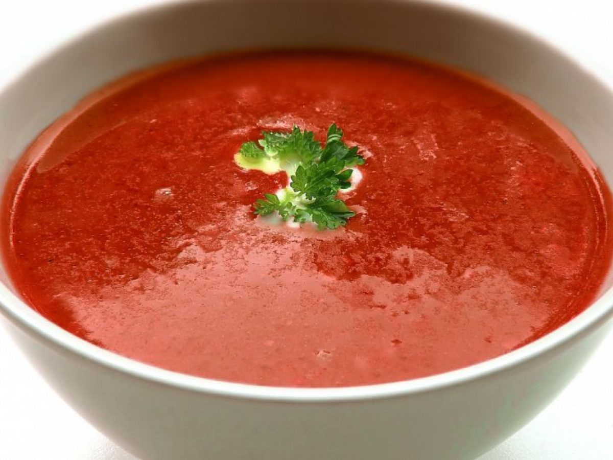

Jednoduchá a rychlá rajská polévka s kořením a těstovinami. Oblíbená klasika vhodná pro děti i dospělé.
V hrnci rozehřejeme máslo, přidáme mouku a připravíme světlou jíšku. Tu za stálého prošlehávání zalijeme vodou.
Přidáme rajský protlak, promícháme a přivedeme k varu. Vložíme celou cibuli, sůl a veškeré koření. Vaříme zvolna cca 20 minut.
Vyjmeme cibuli a koření (případně přecedíme), poté přidáme polévkové těstoviny a necháme je provařit.
Na závěr dochutíme solí, cukrem a ozdobíme nasekanou petrželkou nebo pažitkou. Podáváme teplé.